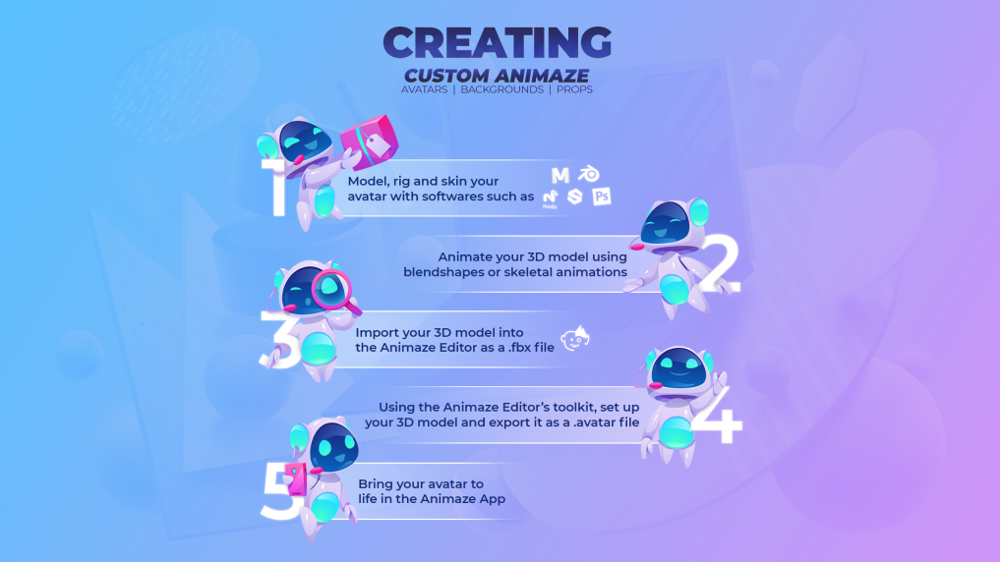

What is Animaze and what is the “.avatar” format?
The Animaze apps allow you to digitally embody amazing characters and stream or share photos and videos on platforms like Twitch, Instagram, TikTok, and more! The Animaze apps are available for free. You can find the Animaze Desktop app on Steam and the Animaze iPhone app on the App Store.
We believe that this digital “shapeshifting” experience is fun and great for communication, streaming, storytelling etc, should have an open standard and should be high quality, accessible and versatile.
The Animaze software and the open .avatar format are there to support that mission. To help your journey in the avatar communication world, we have also made the Animaze Editor, a software that will help you bring YOUR own creations into the Animaze apps and use your very own avatar however you like.
Because we want to empower all character creators out there (3D artists, 2D artists, studios large and small) to bring their creations to life and support themselves while doing that, we are building the Animaze documentation and toolset to support this new form of digital interaction and the open .avatar format. If you feel like a certain topic isn’t covered in the documentation we already have, feel free to contact us at support [@] animaze [.] us and describe what topic would you want to be covered!
Our technical animators and engineers will be constantly working to figure out how to offer the best avatar embodiment experience, and will occasionally update the .avatar standard with new revisions.
The .avatar format can be used for many types of avatar content
Avatars, of multiple types
3D Characters (via common 3D creation packages)
2D Characters (via Live2D Technology)
Hybrid Characters (a combination 3D+ 2D)
3D avatar Props – glasses, hats etc - fun accessories for your characters.
Backgrounds/Backdrops
360 Panoramas (“Skybox”)
2D Photo Background
Video feed backgrounds (FMV)
Fully realized 3D Scenes Particle systems
And more to come!
